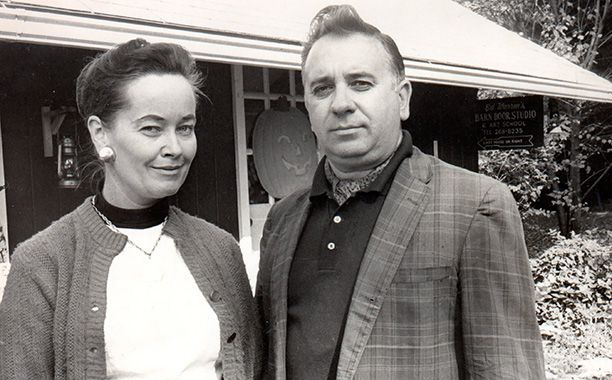

El matrimonio Warren

Edward Warren Miney nació el 7 de septiembre de 1926 en Bridgeport, Connecticut. Aficionado a lo paranormal desde su infancia, Ed era un demonólogo laico y uno de los pocos expertos en demonios de la Iglesia Católica a los que se les permitía realizar exorcismos.
Lorraine Warren, cuyo nombre de soltera era Lorraine Rita Moran, nació el 31 de enero de 1927. Desde muy joven, Lorraine demostró tener habilidades paranormales, como la capacidad de ver auras alrededor de las personas.
Ed Warren y Lorraine se conocieron cuando tenían 16 años en el teatro colonial de Bridgeport, lugar donde Ed trabajaba y Lorraine frecuentaba con su madre. Se casaron en 1945 y tuvieron una hija llamada Judy.
Ed siempre estuvo interesado en lo paranormal, influenciado por los relatos de su casa de la infancia. Tras servir en la Marina durante la Segunda Guerra Mundial, se dedicó a la pintura y luego a la investigación paranormal. Lorraine, por su parte, desarrolló habilidades clarividentes desde niña. Juntos, investigaron casos de poltergeists, casas encantadas y posesiones demoníacas.
Su hija Judy no siguió sus pasos en la demonología. Se casó y tuvo una hija, generando preocupación en sus padres por su seguridad al creer que la nieta podría heredar las habilidades de su abuela. Aunque no se dedicó a lo mismo que sus padres, Judy siempre los apoyó y comprendió su trabajo.
Salto a la fama
Ed y Lorraine Warren alcanzaron la fama gracias a su dedicación a la investigación de lo paranormal y su participación en casos de alta notoriedad pública.
Su enfoque se centraba en la demonología y en la investigación de lugares encantados, lo que los llevó a involucrarse en casos como el de Amityville, donde una familia afirmaba ser atormentada por una presencia demoníaca. La difusión de este caso en libros y películas contribuyó a su creciente popularidad.
Los Warren también fueron conocidos por su participación en el caso de la familia Perron, cuya historia inspiró la película "El Conjuro". Su trabajo en este caso, donde una familia era aterrorizada por una entidad maligna, solidificó su reputación como investigadores paranormales.
Los Warren se convirtieron en figuras reconocidas en el campo de la investigación paranormal, en parte gracias a la publicidad generada por su participación en casos mediáticos y a su enfoque en la demonología. Su legado perdura a través de libros, películas y programas de televisión que difunden sus experiencias y creencias en el mundo de lo paranormal.